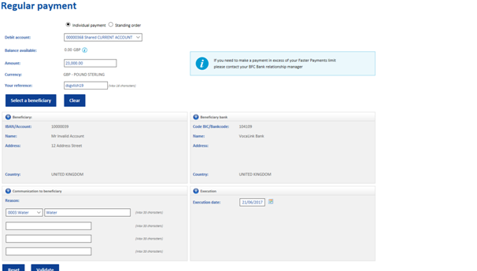

SEPA is an acronym for Single Euro Payments Area. It is a joint integrated European payment service for sending and accepting bank transfers denominated in Euros within the territory of the European Economic Area. It applies common financial schemes, standards and procedures.
SEPA consists of member states of the European Union, the European Free Trade Association and other European countries. Countries involved in the SEPA scheme are:
Austria, Belgium, Bulgaria, Croatia, Cyprus, Czech Republic, Denmark, Estonia, Finland, France, Germany, Greece, Hungary, Iceland, Ireland, Italy, Latvia, Liechtenstein, Lithuania, Luxembourg, Malta, Monaco, Netherlands, Norway, Poland, Portugal, Romania, San Marino, Slovakia, Slovenia, Spain, Switzerland, United Kingdom.
SEPA payments are made the same way as any other International Payment. Follow the instructions on “How to make an international payment and what information will I need? Please note that the payment must be made in Euros and go to one of the European countries listed above.
The Faster Payments Scheme (FPS) is a payment system developed in 2008 and operated by Faster Payments Scheme Limited. This is an organisation consisting of a number of banks and building societies. FPS provides real-time Sterling payments between bank accounts within the UK. It enables electronic payments made online, via the phone or in a bank branch to be received by the beneficiary in less than two hours.
Some smaller banks may not be able to make or accept faster payments. To make a Faster Payment both the sending and receiving banks must be part of the Faster Payment Scheme.
Faster Payments can be used to make large numbers of small valued payments such as bills, supplier payments and online transfers. The maximum value a Faster Payment is restricted to is £250,000. This may be per transaction or per day. It should be noted that individual banks may have their own lower limits for their customers. The Faster Payment limit for BFC Bank clients will be £250,000 per transaction.
Faster Payments are transmitted much quicker than a BACS payment (Bankers Automated Clearing System). BACS payments work on a three day system and take three working days to clear. Payments are submitted to BACS on the first day, processed by the banks on the second day, and taken from the sender account and credited to the recipient account on the third day.
BFC Bank will automatically route all UK payments, up to our limit via Faster Payments. We do not offer BACS.
In order to make a Faster Payment you need the following information:
The example of BFC's Faster Payments template below shows some fields that have been populated.
The Clearing House Automated Payment System (CHAPS) is an organisation that offers high value UK bank to bank fund transfers. This payment method ensures immediate same day settlement. There is no limit to the amount of Sterling funds that can be transferred. Payments usually have to be made by about 3pm as banks have their own specific cut off deadlines. CHAPS is commonly used to transfer the purchase funds for a house between the buyer and seller solicitors, or when buying a high value car, when immediate settlement is required.
CHAPS payments cost between £21 and £25 for a payment made from your BFC Bank account.
To make a CHAPS Payments information as follows is required:
Below is a screenshot of the CHAPS template with the fields that need to be completed